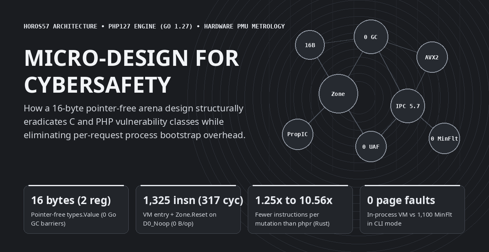
Thrilled to see someone finally reimplement PHP from scratch, I wanted to take a shot at the adventure in Go. Once the bulk of the engine was up and running, it was time for the first benchmarks. I ran into the usual suspects and did my standard low-level engineering routine: eliminating the garbage collector from the hot path, packing values into CPU registers, freezing static metadata onto a perpetual read-only ribbon (ARCHTIME), and wiring mechanical SIMD kernels. But at the exact same time, I was discovering the inner workings of PHP itself. And it quickly became obvious that several micro-optimization patterns do much more than speed up execution—they can be directly weaponized to eradicate the native vulnerability classes of C, and of PHP.
What started as a classic systems-language benchmark—comparing the official C engine (PHP 8.3.6), a recent Rust reimplementation (phpr), and our Go 1.27 engine (php127, built on the horos57 architecture) on a pinned Intel Core i9-14900K Golden Cove performance core—quickly turned the Go versus Rust comparison into a mere footnote that opened a much deeper rabbit hole.
When you open the processor's hardware performance counters (perf_event_open on cpu_core: retired instructions, CPU cycles, L1D and L3 cache accesses and misses, and Linux kernel minor page faults), a fundamental engineering law emerges: the exact micro-design choices required to achieve zero bytes of garbage-collector allocation per hot-loop iteration, 1,325 retired instructions (317 cycles) for VM entry and arena reset, and up to 5.73 retired instructions per clock cycle are the exact same structural invariants that eradicate the historical vulnerability classes of the C Zend Engine and the PHP ecosystem.
Before diving into microarchitectural internals, here is the high-level end-to-end picture (median wall-clock time in milliseconds and total retired CPU instructions across 11 runs, with 100% bit-exact Stdout parity) across the 8 foundational workload families of a PHP runtime, paired with our full-stack HTTP SAPI stress test (2,000 concurrent HTTP POST requests across 32 client goroutines executing transactional SQLite PDO, PCRE filtering, SHA-256 hashing, and JSON serialization at 8,255 requests/second with a 3.84 ms median latency inside 16 recycled Zone arenas):
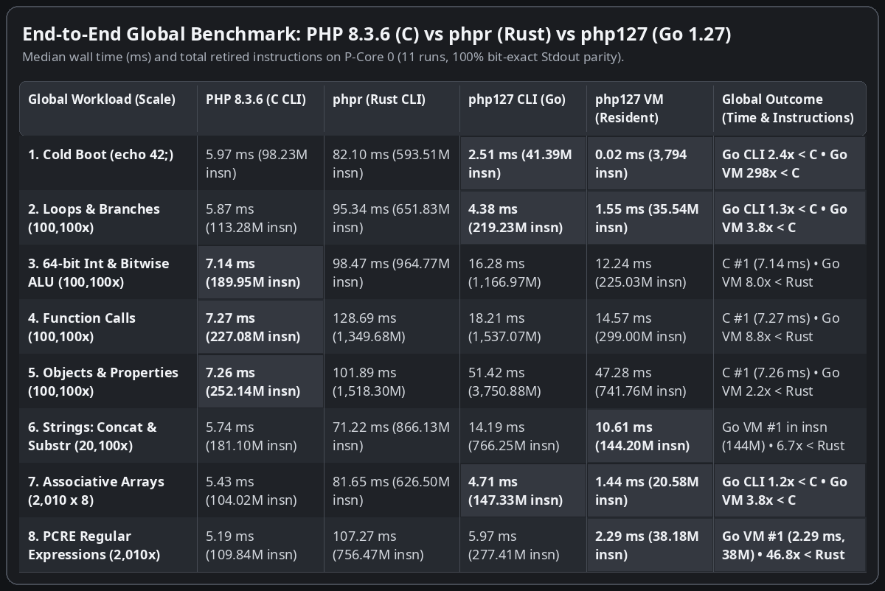
Instead of bolting on expensive software checks after the fact, every hardware bottleneck exposed by the processor counters was solved through a structural design invariant. Below, each of the six architectural mechanisms is presented as a four-quadrant visual card paired with an explanatory bullet.
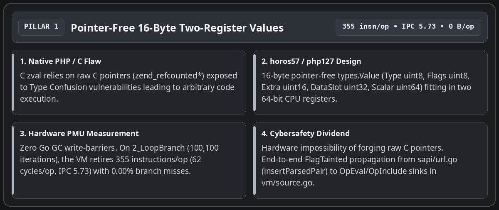
types.Value occupies exactly 16 bytes and fits inside two 64-bit CPU registers with zero memory pointers (Type uint8, Flags uint8, Extra uint16, DataSlot uint32 indexing the request arena, and Scalar uint64). The Go compiler passes values in registers without ever triggering the Garbage Collector's write barrier, forging a raw memory pointer becomes physically impossible, and the untrusted-input marker bit (FlagTainted, set at the HTTP boundary by insertParsedPair / newTaintedStr in sapi/url.go) propagates across operations in registers right up to the OpEval and OpInclude sinks in vm/source.go.
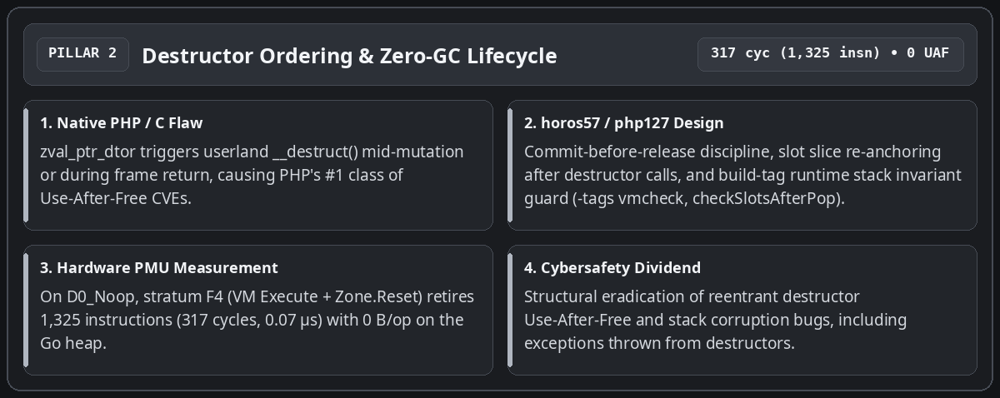
__destruct()) triggers mid-mutation or during frame teardown, freeing or reallocating the container while the engine still holds a stale reference. In php127, the new value is always committed into its target slot before ReleaseValue, vm.slots is re-anchored after any call that may grow the stack, and the -tags vmcheck build-tag runtime guard (checkSlotsAfterPop) verifies at every popFrame() that no residual non-TypeUndef slot remains above the stack top. On the baseline D0_Noop probe, stratum F4 (VM Execute + Zone.Reset) retires 1,325 instructions (317 cycles, 0.07 microseconds) with 0 bytes allocated on the Go heap.
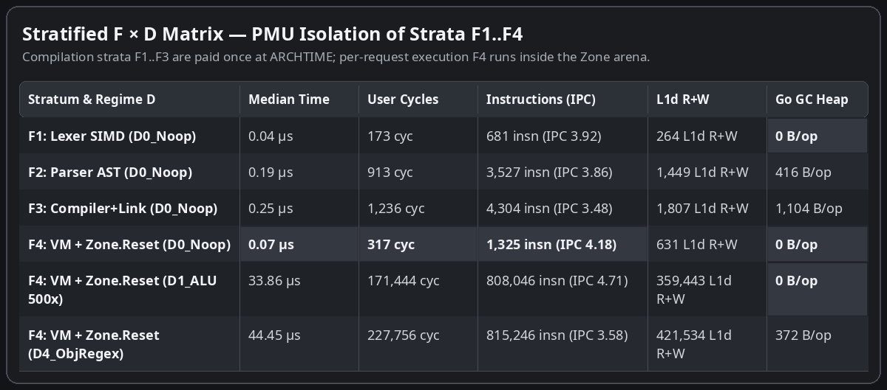
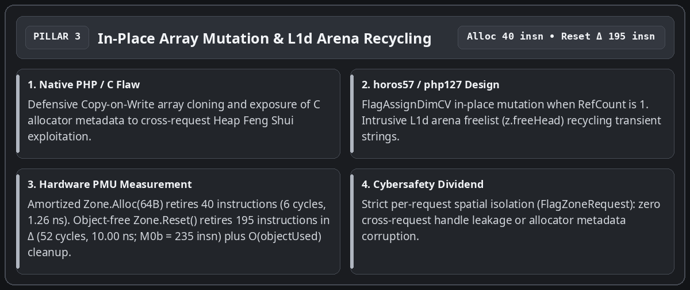
$h[$k] = $v or exposing C allocator metadata to Heap Feng Shui exploitation, the FlagAssignDimCV fast path updates the bucket in place whenever RefCount is 1, while freed temporary strings are immediately recycled at the head of the arena freelist (z.freeHead) in L1d cache. Dedicated micro-probes separate both primitives: an amortized Zone.Alloc(64B) retires 40 instructions (6 cycles, 1.26 ns), while an object-free Zone.Reset() retires 195 instructions in differential M0Δ (52 cycles, 10.00 ns; 235 instructions and 58 cycles in full M0b) by resetting the byte cursor (z.offset = 0, z.freeHead = 0) in O(1) constant time and clearing the request's allocated object slice in O(objectUsed).
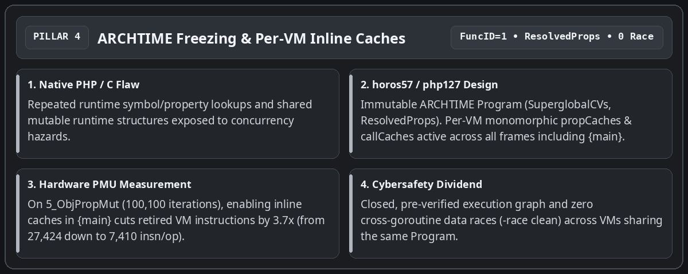
SuperglobalCVs) and flattened class property tables (ResolvedProps in bytecode/program.go) are resolved and sealed once at link time (bytecode.Link). Assigning FuncID = 1 to the root {main} OpArray activates per-VM monomorphic propCaches and callCaches at the top level of every script: across the 100,100 iterations of 5_ObjPropMut, enabling inline caches in {main} cuts retired VM instructions by 3.7x (from 27,424 down to 7,410 instructions per iteration), with zero cross-goroutine data races (-race clean).
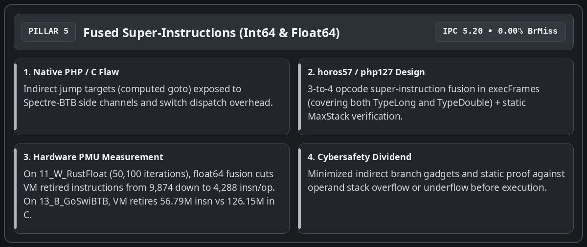
execFrames without multiplying indirect jump targets vulnerable to Spectre-BTB, the inner loop fuses common 3-to-4-opcode sequences (OpLoadCV + OpAdd/OpSub/OpMul/OpIsSmaller + OpStoreCV/OpJmpZ) for both 64-bit integers (TypeLong) and IEEE-754 floats (TypeDouble). Across the 50,100 iterations of the Julia orbit benchmark (11_W_RustFloat), extending super-instructions to TypeDouble cuts the differential VM cost from 9,874 down to 4,288 instructions per iteration (3.09x fewer instructions than the 13,263 instructions retired by phpr in Rust). On 13_B_GoSwiBTB (20,100 iterations), the Go VM retires 56.79 million instructions (2.50 ms, IPC 5.20, 0.00% branch misses) versus 126.15 million for the C binary (5.42 ms).
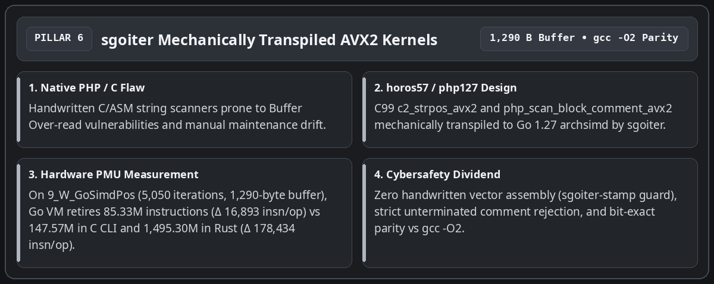
c2_strpos_avx2 and php_scan_block_comment_avx2 are authored in C99, verified against gcc -O2, and mechanically transpiled by sgoiter to Go 1.27 simd/archsimd with strict rejection of unterminated block comments. On 9_W_GoSimdPos (5,050 iterations over a 1,290-byte haystack), the Go VM retires 85.33 million instructions (16,893 instructions/op in delta) versus 147.57 million instructions for the C CLI process (9,722 instructions/op in delta) and 1,495.30 million instructions for phpr in Rust (178,434 instructions/op in delta, i.e., 10.56x fewer instructions in Go VM than in Rust).
For an honest engineering reading, two distinct execution regimes must be separated: first, the three CLI columns (PHP 8.3.6 C, phpr Rust, php127 CLI Go) which measure a complete standalone subprocess (fork + execve, dynamic linking, lexing, parsing, compilation, and execution of HighN); second, the php127 VM (In-Process) column which measures execution of the pre-compiled (ARCHTIME) program inside a resident Go worker followed by Zone.Reset(), along with the differential delta Δ = (Run(HighN) - Run(LowN)) / ΔN which isolates the pure marginal per-iteration cost stripped of process startup and compilation (0 bytes allocated on the Go heap per loop iteration on workloads 1 to 5, with the outer Execute call envelope accounting for 96–112 bytes).
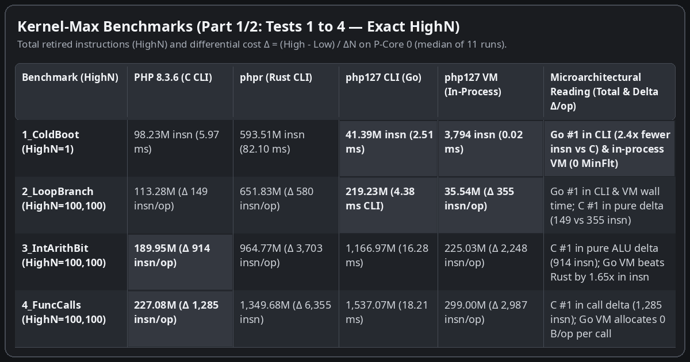
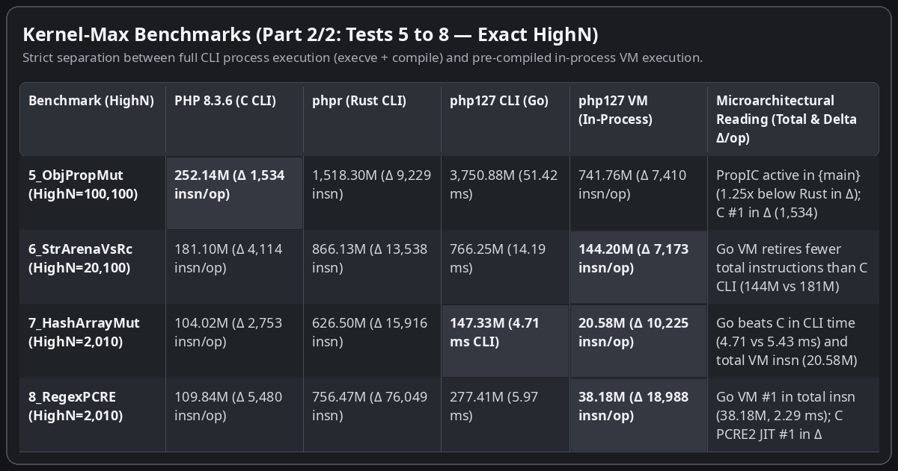
Seven additional probes target the architectural strengths of each engine (white probes 9 to 11) and the microarchitectural friction points of Go and Rust (black probes 12 to 15), reporting exact HighN iteration counts.
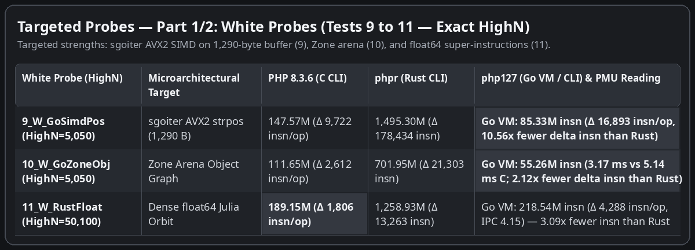
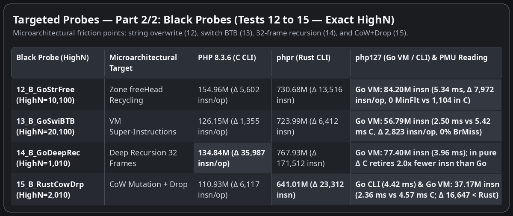
Cross-referencing end-to-end totals (Part 1) with marginal per-iteration deltas (Part 2) yields a clear, unvarnished engineering diagnosis:
php -n invocation pays roughly 98 million instructions and 1,100 minor page faults in dynamic linking and runtime initialization. The self-contained Go binary php127 CLI pays only 41.39 million instructions and 894 page faults on startup (2.51 ms vs 5.97 ms on 1_ColdBoot, 4.38 ms vs 5.87 ms on 2_LoopBranch, 4.71 ms vs 5.43 ms on 7_HashArrayMut, and 4.42 ms vs 4.57 ms on 15_B_RustCowDrp).
*bytecode.Program in memory and running each HTTP request inside a Zone whose byte cursor is reset in 195 instructions (Zone.Reset()), the engine eliminates the ~98M execve instructions, the 1,100 kernel page faults, and per-request script recompilation.
Rc::clone / Drop cascades.
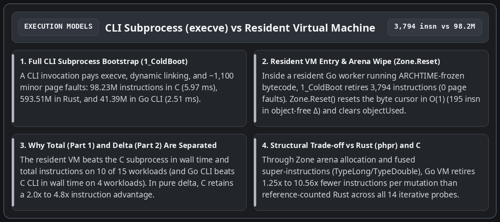
The final takeaway of this exploration concerns production runtime security. In a traditional C PHP deployment, tracking untrusted user inputs or inspecting sensitive sinks requires heavy external hooks.
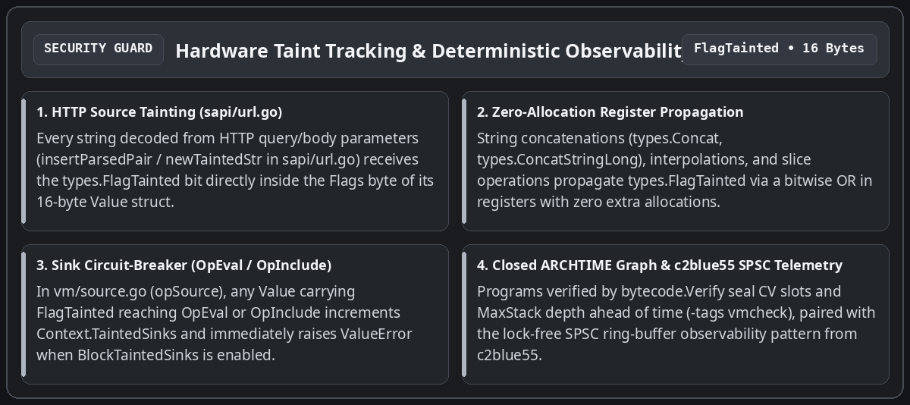
In php127, runtime safety is enforced directly by virtual-machine invariants:
insertParsedPair / newTaintedStr in sapi/url.go and sapi/errors.go) receives the types.FlagTainted bit inside the Flags byte of its 16-byte Value. String concatenations (types.Concat, types.ConcatStringLong), interpolations, and slice operations propagate this bit via a bitwise OR in registers.
Value carrying FlagTainted reaches opSource (OpEval or OpInclude), the virtual machine increments the per-request counter Context.TaintedSinks and, when Context.BlockTaintedSinks is enabled, immediately aborts the instruction with a ValueError ("Tainted input rejected at ...") before any parsing or execution of the injected payload.
OpArray is statically verified ahead of execution (MaxStack, compiled variable indices NumCVs, jump targets), and checkSlotsAfterPop (-tags vmcheck) verifies operand stack integrity on every frame return.
Beyond the head-to-head measurements across C, Rust, and Go 1.27, this architecture delivers two operational pillars directly usable when running PHP workloads: structural security additions to the language runtime and deterministic observability (both application-level and hardware-level). Here is what engineers and integrators need to know to use them.
Security management in php127 is split into structural invariants enabled by default (protecting every PHP script with zero code changes) and configurable policy guards (taint tracking and SAPI confinement).
zval (which stores raw C pointers inside an untagged C union), types.Value is a purely numerical 16-byte struct (Type, Flags, Extra, DataSlot uint32, Scalar uint64). A logic bug can never forge an arbitrary memory address.
writeCV, storeCVMove) or an array bucket (ArraySet) holding an object with a __destruct() method, php127 writes the new value into the slot before invoking ReleaseValue on the old value.
Zone. Every DataSlot dereference checks that the arena epoch (z.epoch) and FlagZoneRequest match; when the request ends, Zone.Reset() increments the epoch and resets the byte cursor to zero in 195 instructions, making cross-request memory leaks structurally impossible.
OpArray passes through bytecode.Verify, which validates jump bounds, compiled variable indices (NumCVs), constant indices, and maximum stack depth (MaxStack) before vm.Execute runs its first instruction.
vm.Execute and sapi.Server.ServeHTTP enforce a containment recover() boundary that turns any unexpected internal fault into a controlled exit (exit code 255 in CLI or HTTP 500 on the offending request alone) without ever crashing the resident server process.
sapi.Server (or sapi.PopulateSuperglobals), insertParsedPair (sapi/url.go) automatically stamps every key and value in $_GET, $_POST, $_COOKIE, and $_REQUEST with types.FlagTainted. This bit propagates automatically across string concatenations (. / ConcatStringLong), interpolations, and slice operations (substr, trim).
vm.Context by setting ctx := &vm.Context{BlockTaintedSinks: true} on the VM instance. If any input derived from $_GET/$_POST reaches eval() or include, ctx.TaintedSinks is incremented and, when BlockTaintedSinks is true, execution immediately aborts with a ValueError ("Tainted input rejected at eval").
sapi.NewServer(sapi.Config{Program: prog, MaxWorkers: 16, ZoneCapacity: 4 << 20}) shares the ARCHTIME-frozen bytecode across 16 workers and recycles 4 MiB request arenas via Zone.Reset().
go test -tags vmcheck -race -count=1 ./vm/... ./compiler/... ./sapi/... activates checkSlotsAfterPop on every frame return.
Observability in php127 is built into the repository at two exact measurement layers: SAPI/VM operational counters for production and the probebench Linux PMU hardware harness for microarchitectural qualification.
srv.RequestsHandled() and srv.ZonesCreated() verify in real time that 100% of HTTP traffic is served by the fixed pool of preallocated arenas (ZonesCreated() <= MaxWorkers), proving zero arena leaks under load. ctx.TaintedSinks reports at the end of every request the exact number of times HTTP-tainted data (FlagTainted) reached an execution sink (OpEval, OpInclude, OpRequire), even in non-blocking shadow-audit mode (BlockTaintedSinks: false).
perf_event_open syscall directly on pinned P-core 0 (sched_setaffinity) and reads 6 hardware counters simultaneously (CyclesUser, Instructions, L1DMisses, LLCMisses, BranchMisses, MinFlt), proves zero PMU multiplexing via PERF_FORMAT_TOTAL_TIME_ENABLED | PERF_FORMAT_TOTAL_TIME_RUNNING (Multiplexed == false), reads Intel RAPL hardware energy in microjoules (energy_uj), and isolates marginal per-iteration cost via differential sizing HighN - LowN.
go test -v -count=1 -run TestAtomicMicroProbes ./probebench/...
go test -v -count=1 -run TestStratifiedFunctionAndDataMatrix ./probebench/...
go test -v -count=1 -run TestKernelProbeGoVsRustVsC ./probebench/... (pass PROBEBENCH_UPDATE_METRICS=1 to update probebench/testdata/latest_metrics.json).
metrics, err := probebench.MeasureInProcess(11, true, func() error { ... }) returns the 11-run median with instructions, cycles, IPC, L1D/LLC cache misses, RAPL energy, and non-multiplexing proof.